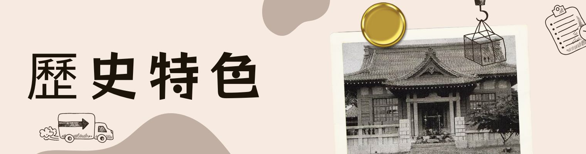
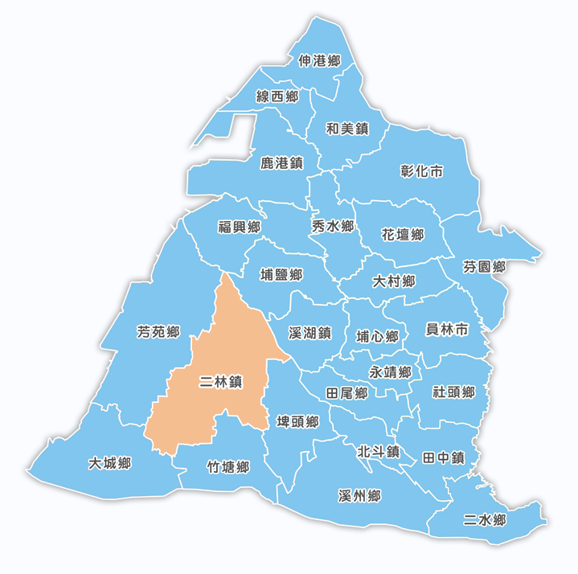

二林，位於彰化南部的小城鎮，或許你從未聽過這個名字
現在就跟著網站介紹，和我一起探索二林吧
全縣面積最大的鎮。
彰化縣農業重鎮，近年部分稻田轉作，多改種水果，例如葡萄、火龍果等，其中金香葡萄多用來釀酒，造就二林鎮是全臺灣酒莊密度最高的地區
除了知名農特產品外，二林鎮依照季節的轉變而有不同的花海點綴，例如每年3-4月-東螺溪沿岸盛開木棉花、每年9月底至11月-儒林路美人樹、12月-蕎麥花雪白花海
不僅可品嘗葡萄酒、賞花，鎮上還有一縣定古蹟之仁和宮，其為二林地區最早的廟宇、以及二林公學校禮堂、武德殿等歷史建築供遊客參觀
二林三寶：紅薏仁、蕎麥、葡萄
位於臺灣彰化縣西南部，地當舊濁水溪下游與魚寮溪之間之濁水溪沖積扇上，東接埤頭鄉，西連芳苑鄉、南鄰大城鄉，北隔舊濁水溪連接溪湖、埔鹽二鄉鎮。
全鎮略呈橢圓型，地勢平坦，土壤肥沃，為一典型農業鄉鎮
